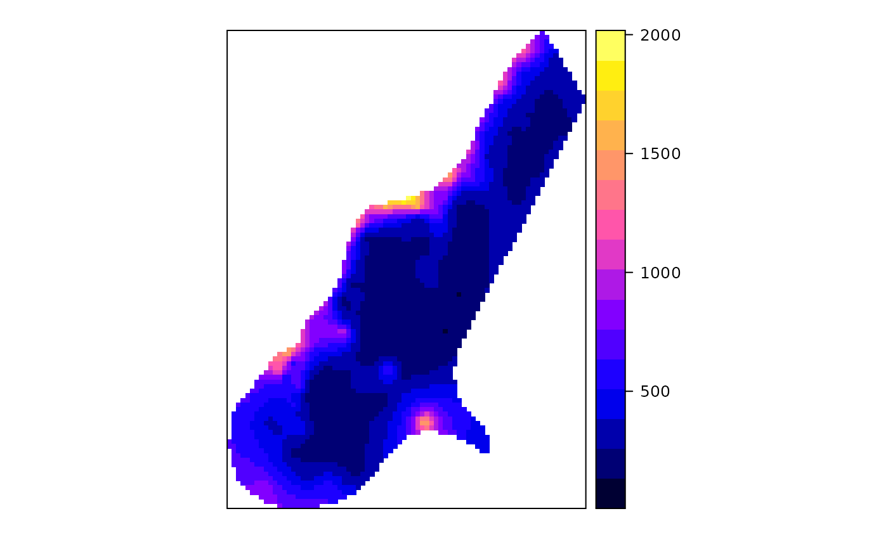

TransGaussian kriging using Box-Cox transforms
krigeTg.RdTransGaussian (ordinary) kriging function using Box-Cox transforms
Usage
krigeTg(formula, locations, newdata, model = NULL, ...,
nmax = Inf, nmin = 0, maxdist = Inf, block = numeric(0),
nsim = 0, na.action = na.pass, debug.level = 1,
lambda = 1.0)Arguments
- formula
formula that defines the dependent variable as a linear model of independent variables; suppose the dependent variable has name
z, for ordinary and use a formula likez~1; the dependent variable should be NOT transformed.- locations
object of class
Spatial, with observations- newdata
Spatial object with prediction/simulation locations; the coordinates should have names as defined in
locations- model
variogram model of the TRANSFORMED dependent variable, see vgm, or fit.variogram
- nmax
for local kriging: the number of nearest observations that should be used for a kriging prediction or simulation, where nearest is defined in terms of the space of the spatial locations. By default, all observations are used
- nmin
for local kriging: if the number of nearest observations within distance
maxdistis less thannmin, a missing value will be generated; see maxdist- maxdist
for local kriging: only observations within a distance of
maxdistfrom the prediction location are used for prediction or simulation; if combined withnmax, both criteria apply- block
does not function correctly, afaik
- nsim
does not function correctly, afaik
- na.action
function determining what should be done with missing values in 'newdata'. The default is to predict 'NA'. Missing values in coordinates and predictors are both dealt with.
- lambda
value for the Box-Cox transform
- debug.level
debug level, passed to predict; use -1 to see progress in percentage, and 0 to suppress all printed information
- ...
other arguments that will be passed to gstat
Details
Function krigeTg uses transGaussian kriging as explained in
http://www.math.umd.edu/~bnk/bak/Splus/kriging.html.
As it uses the R/gstat krige function to derive everything, it needs in addition to ordinary kriging on the transformed scale a simple kriging step to find m from the difference between the OK and SK prediction variance, and a kriging/BLUE estimation step to obtain the estimate of \(\mu\).
Value
an SpatialPointsDataFrame object containing the fields:
m for the m (Lagrange) parameter for each location;
var1SK.pred the \(c_0 C^{-1}\) correction obtained by
muhat for the mean estimate at each location;
var1SK.var the simple kriging variance;
var1.pred the OK prediction on the transformed scale;
var1.var the OK kriging variance on the transformed scale;
var1TG.pred the transGaussian kriging predictor;
var1TG.var the transGaussian kriging variance, obtained by
\(\phi'(\hat{\mu},\lambda)^2 \sigma^2_{OK}\)
Examples
# \donttest{
library(sp)
data(meuse)
coordinates(meuse) = ~x+y
data(meuse.grid)
gridded(meuse.grid) = ~x+y
v = vgm(1, "Exp", 300)
x1 = krigeTg(zinc~1,meuse,meuse.grid,v, lambda=1) # no transform
#> [using ordinary kriging]
#> [generalized least squares trend estimation]
#> [using simple kriging]
x2 = krige(zinc~1,meuse,meuse.grid,v)
#> [using ordinary kriging]
summary(x2$var1.var-x1$var1TG.var)
#> Min. 1st Qu. Median Mean 3rd Qu. Max.
#> 0 0 0 0 0 0
summary(x2$var1.pred-x1$var1TG.pred)
#> Min. 1st Qu. Median Mean 3rd Qu. Max.
#> -2.274e-13 -5.684e-14 0.000e+00 -8.573e-15 0.000e+00 4.547e-13
lambda = -0.25
m = fit.variogram(variogram((zinc^lambda-1)/lambda ~ 1,meuse), vgm(1, "Exp", 300))
x = krigeTg(zinc~1,meuse,meuse.grid,m,lambda=-.25)
#> [using ordinary kriging]
#> [generalized least squares trend estimation]
#> [using simple kriging]
spplot(x["var1TG.pred"], col.regions=bpy.colors())

summary(meuse$zinc)
#> Min. 1st Qu. Median Mean 3rd Qu. Max.
#> 113.0 198.0 326.0 469.7 674.5 1839.0
summary(x$var1TG.pred)
#> Min. 1st Qu. Median Mean 3rd Qu. Max.
#> 130.7 229.7 299.5 403.2 521.3 1894.3
# }